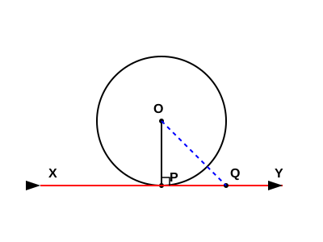
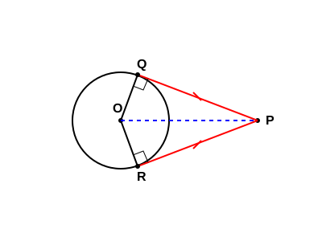

Theorem 10.1: The tangent at any point of a circle is perpendicular to the radius through
the point of contact.

Given: A circle with center O and tangent XY at point P.
To Prove: OP ⊥ XY.
Construction: Take any point Q on XY (other than P) and join OQ.
Proof:
Since Q lies on the tangent XY, it must lie outside the circle (if it lay inside, XY would be a secant, not a tangent).
Therefore, OQ is longer than the radius OP of the circle (OQ > OP).
Since this is true for every point Q on XY other than P, OP is the shortest distance from center O to the line XY.
Since the shortest distance from a point to a line is always perpendicular:
OP ⊥ XY
Theorem 10.2: The lengths of tangents drawn from an external point to a circle are equal.

Given: A circle with center O and tangents PQ, PR from external point P.
To Prove: PQ = PR.
Construction: Join OQ, OR, and OP.
Proof:
In right-angled triangles \(\triangle OQP\) and \(\triangle ORP\) (since radius ⊥ tangent, \(\angle OQP = \angle ORP = 90^\circ\)):
1. \(OQ = OR\) (Radii of the same circle)
2. \(OP = OP\) (Common hypotenuse)
Therefore, \(\triangle OQP \cong \triangle ORP\) (by RHS congruence rule).
By CPCT (Corresponding Parts of Congruent Triangles):
PQ = PR